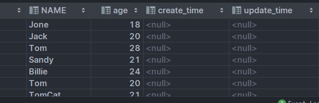
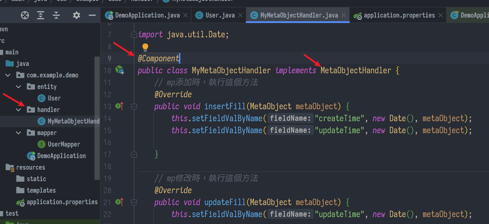
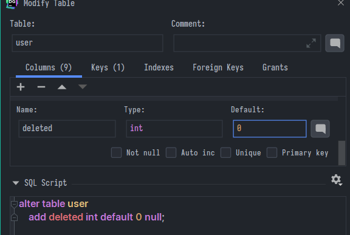
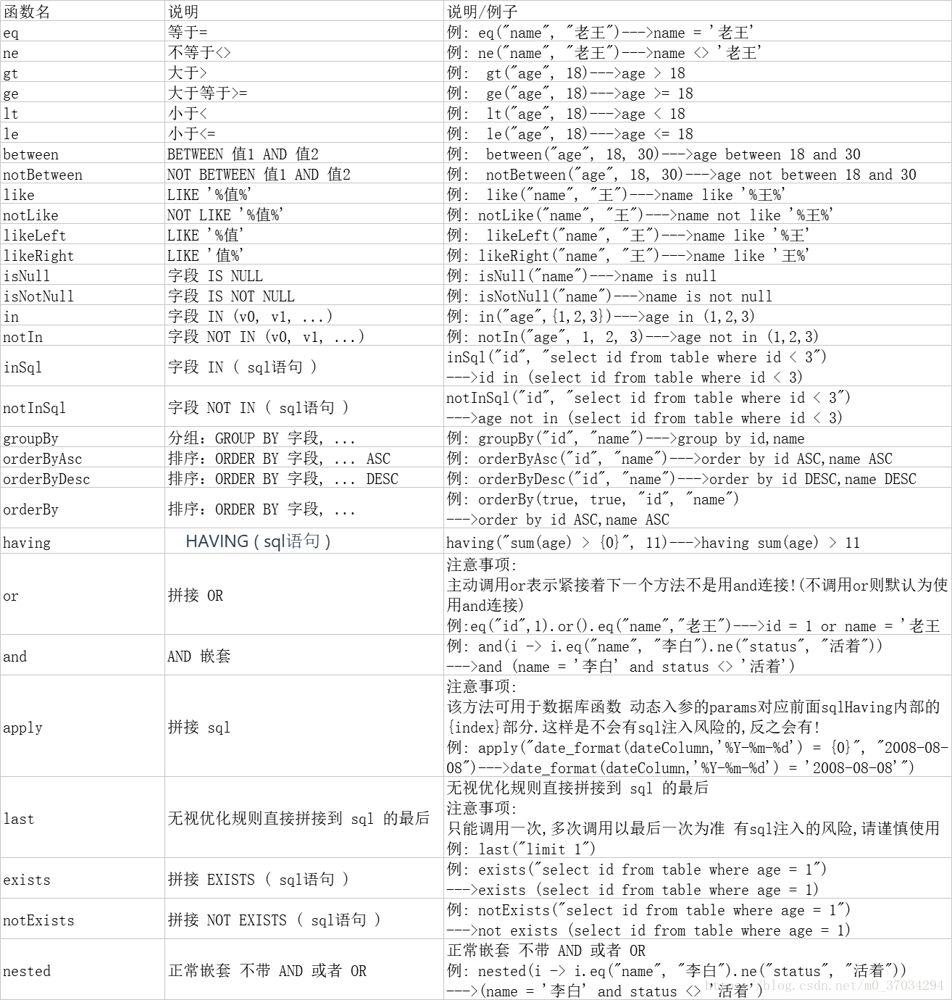

MyBatis-Plus快速上手
尚硅谷Spring筆記-02
MyBatis-Plus
非常好用的ORM框架
- https://baomidou.com/
- 它官網目前2022年1月是最新3.5.0版本，以下基於此版本與MySQL 8演示
依賴
<!--mybatis-plus-->
<dependency>
<groupId>com.baomidou</groupId>
<artifactId>mybatis-plus-boot-starter</artifactId>
<version>3.5.0</version>
</dependency>
<!--mysql依賴-->
<dependency>
<groupId>mysql</groupId>
<artifactId>mysql-connector-java</artifactId>
</dependency>
<!--lombok用來簡化實體類-->
<dependency>
<groupId>org.projectlombok</groupId>
<artifactId>lombok</artifactId>
<optional>true</optional>
</dependency>
<!--spring-boot-starter 如果沒有要加-->
<dependency>
<groupId>org.springframework.boot</groupId>
<artifactId>spring-boot-starter</artifactId>
</dependency>
<dependency>
<groupId>org.springframework.boot</groupId>
<artifactId>spring-boot-starter-test</artifactId>
<scope>test</scope>
</dependency>
application.properties
#MySQL 8
spring.datasource.driver-class-name=com.mysql.cj.jdbc.Driver
spring.datasource.url=jdbc:mysql://localhost:3306/mybatis_plus?serverTimezone=GMT%2B8
spring.datasource.username=root
spring.datasource.password=1234
#mybatis日誌，開啟後更好查看SQL操作
mybatis-plus.configuration.log-impl=org.apache.ibatis.logging.stdout.StdOutImpl
綁定Mapper
最傳統是在xml中一個一個綁定bean的屬性與資料庫的表格，Mapper就是他們的映射關係。
在MyBatis-Plus中只要繼承他封裝好的BaseMapper就能直接開始CRUD
在實體類(pojo/bean/entity)的包下先建立對應的實體類(例如User.java)，用@Data標記讓Lombok快速生成，不用Lombok就自己手動生成setter那些
@Data
public class User {
創建包名mapper，下面建立對應的Mapper接口，繼承BaseMapper<User>，泛型<>中放bean，並用@Repository標記(為了後面測試生成實例時不泛紅報錯)，例如:
@Repository
public interface UserMapper extends BaseMapper<User> {
}
到springboot主入口，綁定@MapperScan，例如:
@SpringBootApplication
@MapperScan("com.example.demo.mapper")
public class DemoApplication {
public static void main(String[] args) {
SpringApplication.run(DemoApplication.class, args);
}
測試
CRUD等方法都在BaseMapper中有寫了
@Autowired
private UserMapper userMapper;
@Test
public void findAll() {
List<User> users = userMapper.selectList(null);
System.out.println(users);
}
測試用表:
CREATE TABLE USER
(
id BIGINT(20)NOT NULL COMMENT '主鍵ID',
NAME VARCHAR(30)NULL DEFAULT NULL COMMENT '姓名',
age INT(11)NULL DEFAULT NULL COMMENT '年齡',
email VARCHAR(50)NULL DEFAULT NULL COMMENT '郵箱',
PRIMARY KEY (id)
);
INSERT INTO user (id, name, age, email)VALUES
(1, 'Jone', 18, 'test1@baomidou.com'),
(2, 'Jack', 20, 'test2@baomidou.com'),
(3, 'Tom', 28, 'test3@baomidou.com'),
(4, 'Sandy', 21, 'test4@baomidou.com'),
(5, 'Billie', 24, 'test5@baomidou.com');
常用功能
以下用縮寫mp代指MyBatis-Plus
註解
在實體類bean使用，括號內沒指明就是value =
@TableName("資料庫中的表名")
用於實體類中名稱與表名不同
mp預設會自動辨別資料庫中表名與實體類，
找不到時可手動設定
@TableField("欄位名")
用於表欄位名與java中命名不同
mp預設會自動辨別資料庫中的_然後拼接回小駝峰
@TableField(exist = false)
表示不需要映射的屬性
@TableId("主鍵名")
mp預設認為叫id的是主鍵，若不同需手動設定
增
- 使用
insert()方法，推薦一個IDEA插件GenerateAllSetter，選住類名(例如這邊是User)按alt+enter就能生成所有setter方法並填上預設值
@Test
public void add() {
User user = new User();
user.setName("Tom");
user.setAge(20);
user.setEmail("Tom@com");
// 返回受影響行數
System.out.println(userMapper.insert(user));
}
主鍵策略
- 在主鍵屬性上註解
type=?，例如:
@Data
public class User {
@TableId(type = IdType.AUTO)
private Long id;
- ASSIGN_ID:預設值，使用雪花算法，依照時間增長的19位不碰撞數字串，注意長度遠超int(上限2147483647)所以在java用Long去裝
- AUTO:自增，注意選這個資料庫也要設定過
AUTO_INCREMENT，否則報錯無法插入 - INPUT:手動指定。其他還有自己查文檔
- 也可以在properties設定，但註解>全局設定
#全域設置主鍵生成策略
mybatis-plus.global-config.db-config.id-type=auto
改
正常不會這麼做
- 直接
setId指定要改的條目，調用updateById方法
@Test
public void update() {
User user = new User();
user.setId(1478638590023315458L);
user.setName("TomCat");
user.setAge(21);
user.setEmail("Tomcat@com");
// 返回受影響行數
System.out.println(userMapper.updateById(user));
}
自動填充
- 在資料庫增加兩個欄位
create_time與update_time

- 到實體類增加自動填充的註解，例如
@TableField(fill = FieldFill.INSERT)
private Date createTime;
@TableField(fill = FieldFill.INSERT_UPDATE)
private Date updateTime;
// 注意修改的如果只寫FieldFill.UPDATE那一開始會是空的
- 在
handler包下造一個自訂類，實現MetaObjectHandler接口，實現方法中指定要填充的內容，最後加上@Component註解這個類讓它能被spring抓到
@Component
public class MyMetaObjectHandler implements MetaObjectHandler {
// mp添加時，執行這個方法
@Override
public void insertFill(MetaObject metaObject) {
this.setFieldValByName("createTime", new Date(), metaObject);
this.setFieldValByName("updateTime", new Date(), metaObject);
}
// mp修改時，執行這個方法
@Override
public void updateFill(MetaObject metaObject) {
this.setFieldValByName("updateTime", new Date(), metaObject);
}
}

樂觀鎖
當要更新一條資料時不希望被別人更新，實現線程安全
- 在資料庫表中增加欄位version，在bean中同樣增加並註解
@Version
@TableField(fill = FieldFill.INSERT)
private Integer version;
- 創建一個config包下面放配置類，省得把設定一堆都寫在主入口，例如就叫做
MybatisPlusConfig.java - 把一開始的
@MapperScan也搬過來，並註冊Bean
@Configuration
@MapperScan("com.example.demo.mapper")
public class MybatisPlusConfig {
@Bean
public MybatisPlusInterceptor mybatisPlusInterceptor() {
MybatisPlusInterceptor interceptor = new MybatisPlusInterceptor();
// 引入樂觀鎖插件
interceptor.addInnerInterceptor(new OptimisticLockerInnerInterceptor());
return interceptor;
}
}
- 回到剛剛的insertFill方法，讓version預設從1開始
@Component
public class MyMetaObjectHandler implements MetaObjectHandler {
// mp添加時，執行這個方法
@Override
public void insertFill(MetaObject metaObject) {
this.setFieldValByName("createTime", new Date(), metaObject);
this.setFieldValByName("updateTime", new Date(), metaObject);
this.setFieldValByName("version", 1, metaObject);
}
先查再改
@Test
public void update2() {
User user = userMapper.selectById(1478638590023315461L);
user.setName("Lucy");
// 返回受影響行數
System.out.println(userMapper.updateById(user));
}
- 注意這邊不需要手動修改version，mp會自己去抓並且+1，當Interceptor發現version版本前後不對時就會觸發樂觀鎖，避免更新失效的問題(不可重複讀(non-repeatable read))
查詢
@Test
public void selectTest1() {
// 多個id一起查
List<User> users = userMapper.selectBatchIds(Arrays.asList(1, 2, 3));
}
@Test
public void selectTest2() {
// 簡易多條件查
Map<String, Object> map = new HashMap<>();
map.put("name", "Jack");
map.put("age", 20);
userMapper.selectByMap(map);
}
分頁
- 先引入插件
@Bean
public MybatisPlusInterceptor mybatisPlusInterceptor() {
MybatisPlusInterceptor interceptor = new MybatisPlusInterceptor();
// 引入樂觀鎖插件
interceptor.addInnerInterceptor(new OptimisticLockerInnerInterceptor());
// 分頁插件
interceptor.addInnerInterceptor(new PaginationInnerInterceptor());
return interceptor;
}
- 這邊頁數從1開始算，不用管SQL中奇怪的頁數從0開始那些
@Test
public void selectTest3() {
// Page(當前第幾頁，一頁顯示幾筆)，注意若1就是直觀的第一頁
Page<User> page = new Page(2, 5);
Page<User> userPage = userMapper.selectPage(page, null);
// 得到的資料
long total = userPage.getTotal(); // 總筆數
long pages = userPage.getPages();// 總頁數
long current = userPage.getCurrent(); // 當前頁數
List<User> records = userPage.getRecords(); // 當前頁中的資料
boolean next = userPage.hasNext(); // 是否有下頁
boolean previous = userPage.hasPrevious(); // 是否有上頁
System.out.println("total = " + total);
System.out.println("pages = " + pages);
System.out.println("current = " + current);
System.out.println("records = " + records);
System.out.println("next = " + next);
System.out.println("previous = " + previous);
}
邏輯刪除
物理刪除大同小異沒啥好說，正式開發也不常用
- pojo中新增屬性deleted，可以用boolean或int(1,0)表示，總之加上
@TableLogic註解
@TableLogic
private Integer deleted;
- 資料庫同樣要有對應欄位，設定預設值0或使用自動填充

- 如此設定後，原本SQL語句的DELETE就會被替換成UPDATE
- 查找、更新會自動追加
where deleted=0，忽略掉已邏輯刪除的條目- 但實際上去資料庫查還是可以還原該筆資料
Wrapper條件構造器
用來執行複雜的條件查詢等等
- 造QueryWrapper，用QueryWrapper.XX設定條件(可以多個條件)，最後以此QueryWrapper作為參數執行
select方法 - 範例，查詢
age>21的:
@Test
public void WrapperTest1() {
QueryWrapper<User> userQueryWrapper = new QueryWrapper<>();
userQueryWrapper.gt("age", 20);
List<User> users = userMapper.selectList(userQueryWrapper);
System.out.println(users);
}
- 可能用到的條件

- 多表連接、太複雜的還是需要xml或是在SQL做View。https://yoziming.github.io/post/211225-agg-mysql-10/
上次修改於 2022-01-12